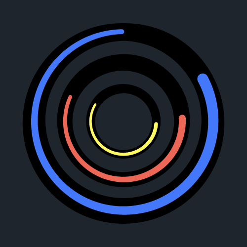
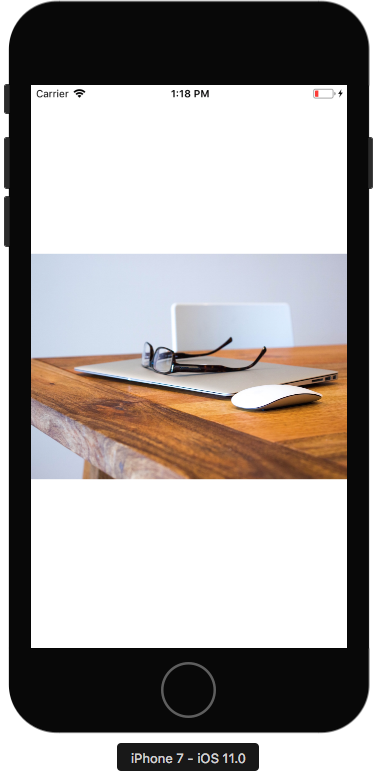
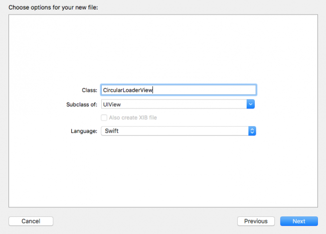
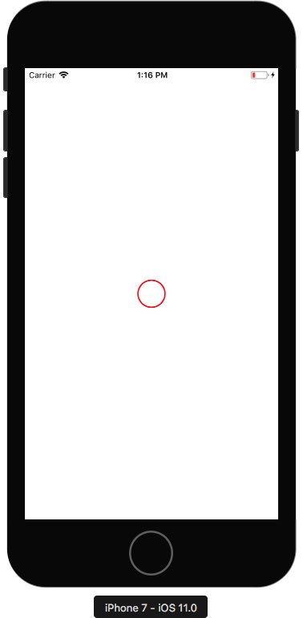
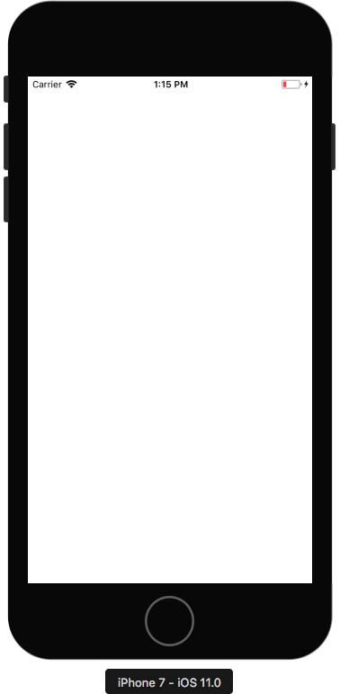
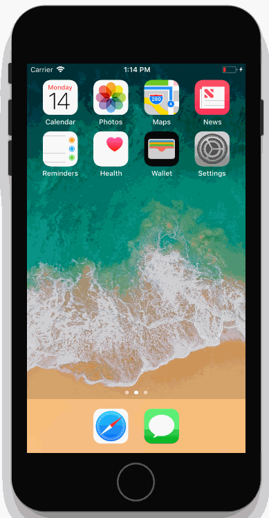
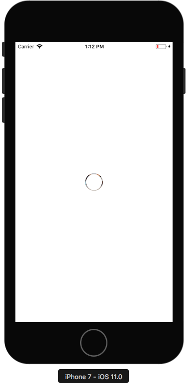
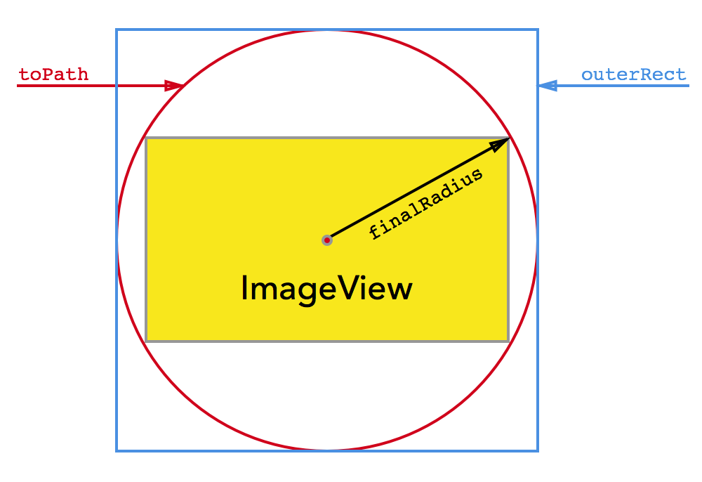
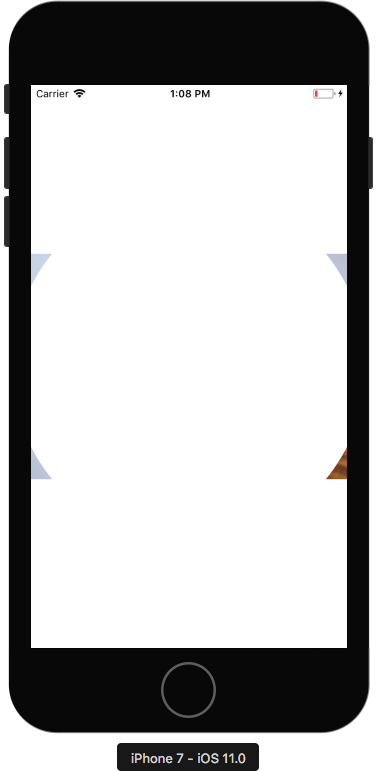
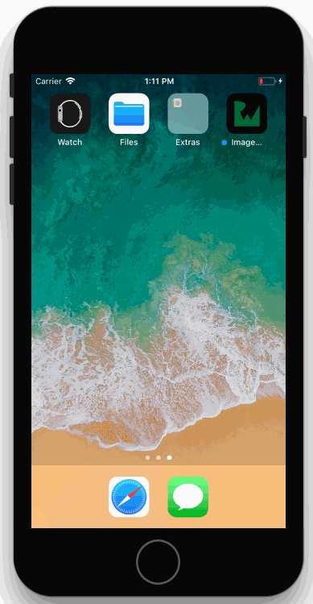

如何使用 CAShapeLayer 实现圆形图像加载动画
原文地址 / 作者：Michael Katz
翻译于：2017/08/29，Alex Tse
教程由 Michael Katz 更新支持 Xcode 9 beta / iOS 11 / Swift 4
原教程是 Rounak Jain 编写

很久之前，Michael Villar 在他的运动实验帖子发布了一些十分有趣的加载动画。
GIF 结合了圆形指示符和圆形揭示效果来显示加载动画。这个效果相当有趣，独特，甚至有点迷人！ :]
这次 CAShapeLayer 的教程将会让你在 Swift 和 Core Animation 重现这个效果。开始吧！
入门
先下载教程的初始代码
花点时间预览下项目内容和结构。ViewController 有一个 UIImageView 的子类 CustomImageView，使用 SDWebImage 加载图片。初始项目已经包含了一些 view 和图片加载的代码。
运行之后，稍等一会就能看到一张图片出现在屏幕上：

你应该会注意到首次运行 App 时，图片在加载过程中 App 好像暂停了几秒钟，然后图片又突然的出现在屏幕上。当然，现在还没有加圆形进度提示，所以你需要通过这个 CAShapeLayer 教程完成它！
创建这个动画有2个不同的阶段：
- Circular progress。首先，需要画出一个圆形进度指示符，并根据下载的进度来更新它。
- Expanding circular image。其次，将通过不断扩大的圆形圈来揭示下载完毕的图片。
跟紧教程，别被弄得"团团转(round in circles)"！ :]
创建圆形指示符
想一想进度指示的基本设计，起初从空，显示的进度为 0%，然后随着图片下载的过程，逐渐填充到 100%。使用 CAShapeLayer 实现一个圆形路径是相当简单的。
注意：如果你是第一次接触
CAShapeLayer(或CALayers)，可以先看看 Scott Gardner 的 在 iOS 用 Swift 使用 CALayer 这篇教程。
你可以使用 CAShapeLayer 属性的 strokeStart 和 strokeEnd 来控制图形的轮廓或 stroke(笔画) 的开始和结束位置。通过改变 strokeEnd 0 和 1 之间的值，以表示下载的进度。
让我们来试一下。从 iOS\Source\Cocoa Touch Class template 创建一个新文件，命名为：CircularLoaderView，父类为 UIView：

点击 Next，然后 Create。这个 UIView 的子类将会包含所有的动画代码。
打开 CircularLoaderView.swift，将下面的属性添加到类里面：
let circlePathLayer = CAShapeLayer()
let circleRadius: CGFloat = 20.0
circlePathLayer 表示圆的路径，circleRadius 表示圆的半径。高深的问题(Rocket science)，我知道！
下一步，在 circleRadius 下方添加初始化代码用于配置图形层：
override init(frame: CGRect) {
super.init(frame: frame)
configure()
}
required init?(coder aDecoder: NSCoder) {
super.init(coder: aDecoder)
configure()
}
func configure() {
circlePathLayer.frame = bounds
circlePathLayer.lineWidth = 2
circlePathLayer.fillColor = UIColor.clear.cgColor
circlePathLayer.strokeColor = UIColor.red.cgColor
layer.addSublayer(circlePathLayer)
backgroundColor = .white
}
两个初始化方法都调用了 configure()。configure() 设置了 circlePathLayer 的 frame 匹配 view 的 bounds，线宽(line width)为 2，透明的填充色，和一个红色的笔画(stroke)。接下来将 circlePathLayer 添加到 view 的子层，并将 view 的 backgroundColor 设置为白色，便于在图片加载时候遮住其他部分。
添加路径(path)
已经配置了层，是时候设置它的路径了，首先在 configure() 方法下面添加如下辅助方法：
func circleFrame() -> CGRect {
var circleFrame = CGRect(x: 0, y: 0, width: 2 * circleRadius, height: 2 * circleRadius)
let circlePathBounds = circlePathLayer.bounds
circleFrame.origin.x = circlePathBounds.midX - circleFrame.midX
circleFrame.origin.y = circlePathBounds.midY - circleFrame.midY
return circleFrame
}
这个简单的方法计算指示符路径的 CGRect，边界的宽高等于 circleRadius 的两倍，位置在 view 的正中间。单独写一个方法来处理这个简单操作的原因是 view 每次更改大小时都需要重新计算 circleFrame。
接下来在 circleFrame() 方法下面添加创建路径的方法：
func circlePath() -> UIBezierPath {
return UIBezierPath(ovalIn: circleFrame())
}
这个方法返回边界为 circleFrame() 的圆形 UIBezierPath。由于 circleFrame() 返回的是一个正方形，所以这里的"椭圆形"会是一个圆形。
层(layer)没有 autoresizingMask 属性，所以要重写 layoutSubviews 以相应 view 大小的改变。
重写 layoutSubviews()，代码如下：
override func layoutSubviews() {
super.layoutSubviews()
circlePathLayer.frame = bounds
circlePathLayer.path = circlePath().cgPath
}
在这里调用 circlePath() 方法因为 frame 改变时需要重新计算路径。
打开 CustomImageView.swift，在类里添加下面属性：
let progressIndicatorView = CircularLoaderView(frame: .zero)
这个属性是刚刚创建的 CircularLoaderView 类的实例。
接下来在 init(coder:) 方法里，let url... 语句之前添加下面代码：
addSubview(progressIndicatorView)
addConstraints(NSLayoutConstraint.constraints(
withVisualFormat: "V:|[v]|", options: .init(rawValue: 0),
metrics: nil, views: ["v": progressIndicatorView]))
addConstraints(NSLayoutConstraint.constraints(
withVisualFormat: "H:|[v]|", options: .init(rawValue: 0),
metrics: nil, views: ["v": progressIndicatorView]))
progressIndicatorView.translatesAutoresizingMaskIntoConstraints = false
这里将进度指示符添加到 CustomImageView 的子视图。然后添加两个布局约束，确保指示符和 ImageView 的尺寸大小相同。最后将 translatesAutoresizingMaskIntoConstraints 设置为 false，这样 Autoresizing Mask 不会影响 Auto Layout 引擎。
运行项目，你应该会看到一个红的空心圆圈，像这样：

太棒了！进度指示符出现在屏幕上了。
修改 Stroke 长度
打开 CircularLoaderView.swift，在其他属性语句下面添加如下代码：
var progress: CGFloat {
get {
return circlePathLayer.strokeEnd
}
set {
if newValue > 1 {
circlePathLayer.strokeEnd = 1
} else if newValue < 0 {
circlePathLayer.strokeEnd = 0
} else {
circlePathLayer.strokeEnd = newValue
}
}
}
这里创建了一个计算属性(computed property)，这个属性没有存储值(backing variable)，只定义了 setter 和 getter。getter 返回 circlePathLayer.strokeEnd，setter 验证输入的 0 到 1 之间的值，并相应的设置层的 strokeEnd 属性。
在 configure() 里添加 progress 初始化进度：
progress = 0
运行之后，你应该会看到一个空白的屏幕，相信我！这没错的！ :] 设置 progress 为 0 等于将 strokeEnd 设置为 0，这表示图形层没有绘制任何东西。

接下来要在图片下载的回调函数上更新指示符的 progress。
打开 CustomImageView.swift，用下面的代码替换 Update progress here：
self?.progressIndicatorView.progress = CGFloat(receivedSize) / CGFloat(expectedSize)
这里通过 receivedSize 除以 expectedSize 计算进度。
注意：你可能会注意到 self 在 block 里面使用了弱引用，这是为了避免循环引用。
运行 App，你会看到指示符的进度像这样开始动了：

即使没有添加任何动画代码，CALayer 也可以轻松在图层上使用任意动画属性，随着变化而自然的过度动画。清晰方便！
现在完成了第一阶段，准备开始第二阶段，也是最后一个阶段 —— 大揭示！ :]
创建揭示(reveal)动画
揭示过程是不断通过扩大圆环来揭示图片，如果你看过这篇 构建一个 Ping 风格的 View Conroller 动画 教程，你就会知道 CALayer 的 mask 属性是多么的实用。
打开 CircularLoaderView.swift，添加下面方法：
func reveal() {
// 1
backgroundColor = .clear
progress = 1
// 2
circlePathLayer.removeAnimation(forKey: "strokeEnd")
// 3
circlePathLayer.removeFromSuperlayer()
superview?.layer.mask = circlePathLayer
}
让我们一步一步的分析这个重要的方法：
- 将 view 的背景颜色清除了，使 view 后面的图片不在隐藏，并将
progress设为 1。 - 移除
strokeEnd属性，防止有任何待处理的隐式动画(implicit animations)来干扰接下来要执行的动画。想了解更多隐式动画，可看 iOS 动画教程。 - 从
superLayer移除circlePathLayer，并将其作为superView的图层蒙版，这样图片就可以通过"圆孔"透出来了。这里重复使用现有层，避免出现重复代码。
用下面的执行 reveal() 的代码替换 CustomImageView.swift 的 Reveal image here 注释：
if let error = error {
print(error)
}
self?.progressIndicatorView.reveal()
运行 App，图片加载完毕之后，你会透过那个小环的地方看到图片：

你可以看到背后的图片的，但只是一点点！ :]
扩大圈范围
下一步需要将这个圆环同时向内向外扩展。你可以使用两个独立的同心 UIBezierPath 实现这个效果，但这里有一个更有效的方法，只需要用一个 UIBezierPath。
怎么样？只需要通过修改路径(path)属性，在增加圆向外扩展半径的同时增加线宽(line width)使圆环更厚，最终这两个值结合能够足以显示整张图片。
打开 CircularLoaderView.swift，继续在 reveal() 里添加下面代码：
// 1
let center = CGPoint(x: bounds.midX, y: bounds.midY)
let finalRadius = sqrt((center.x*center.x) + (center.y*center.y))
let radiusInset = finalRadius - circleRadius
let outerRect = circleFrame().insetBy(dx: -radiusInset, dy: -radiusInset)
let toPath = UIBezierPath(ovalIn: outerRect).cgPath
// 2
let fromPath = circlePathLayer.path
let fromLineWidth = circlePathLayer.lineWidth
// 3
CATransaction.begin()
CATransaction.setValue(kCFBooleanTrue, forKey: kCATransactionDisableActions)
circlePathLayer.lineWidth = 2*finalRadius
circlePathLayer.path = toPath
CATransaction.commit()
// 4
let lineWidthAnimation = CABasicAnimation(keyPath: "lineWidth")
lineWidthAnimation.fromValue = fromLineWidth
lineWidthAnimation.toValue = 2*finalRadius
let pathAnimation = CABasicAnimation(keyPath: "path")
pathAnimation.fromValue = fromPath
pathAnimation.toValue = toPath
// 5
let groupAnimation = CAAnimationGroup()
groupAnimation.duration = 1
groupAnimation.timingFunction = CAMediaTimingFunction(name: kCAMediaTimingFunctionEaseInEaseOut)
groupAnimation.animations = [pathAnimation, lineWidthAnimation]
circlePathLayer.add(groupAnimation, forKey: "strokeWidth")
这里的代码看似很多，但做的事情很简单：
- 这里计算了 ImageView 外切圆的半径，并使用它来计算了此圆边界的
CGRect。toPath表示CAShapeLayer遮罩层最终形状，如下图所示：

- 获取当前的
lineWidth和path初始值。 - 设置
lineWidth和path最终值，这里防止动画完成之后跳回原始值。把CATransaction的kCATransactionDisableActions设置为true可禁用层的隐式动画。 - 创建了
path和lineWidth的CABasicAnimation实例。其中为了让圆能向内和向外扩展，lineWidth必须是半径的两倍（的速度）。 - 把这 2 个动画添加到
CAAnimationGroup，然后将动画组(animation group)添加到图层。
运行 App，图片下载完毕之后你会看到如下的揭示动画：

当动画完成后你会发现有部分圆还在屏幕上，要解决这个问题，可以将下面的扩展添加 CircularLoaderView.swift 尾部，并实现 animationDidStop(_:finished:)：
extension CircularLoaderView: CAAnimationDelegate {
func animationDidStop(_ anim: CAAnimation, finished flag: Bool) {
superview?.layer.mask = nil
}
}
这段代码是从 super layer 移除遮罩层。
最后在 reveal() 里，circlePathLayer.add(groupAnimation, forKey: "strokeWidth") 语句前面，添加：
groupAnimation.delegate = self
这里设置了委托，以便 animationDidStop(_:finished:) 被执行。
运行 App，你会看到动画完整的效果：

恭喜，你完成了圆形图像加载动画！
何去何从？
你可以在这里下载到此次教程的完整代码。
可以根据你的需要和个人的设计要求进一步的调整动画的时间，曲线和颜色。有一个可能的改进是把图形层的 lineCap 属性设置为 kCALineCapRound，逐渐的去掉圆形进度条的尾端。接下来看看你能想出怎样的改进！
如果你喜欢这次 CAShapeLayer 教程，并且想学习和创建更多类似的动画，可以看看 Marin Todorov 的书：iOS 动画教程，从基础的 view animation(视图动画)，到 layer animation(图层动画)，animating constraint(动画约束)，view controller transition(视图控制器的过度动画) 等等。
如果你有任何关于本教程的问题和意见，可在下方评论。我十分期待能看到你将如此酷的动画效果添加到你的 App 里。